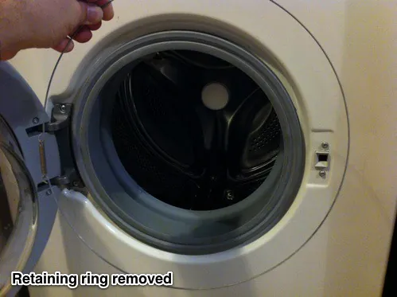
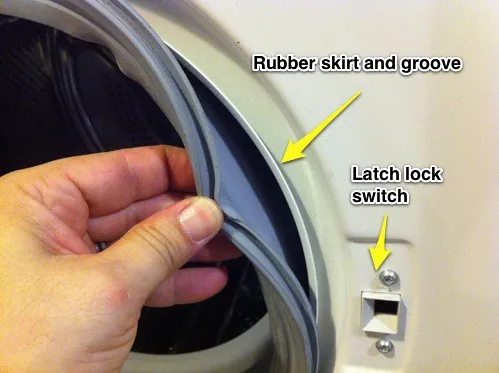
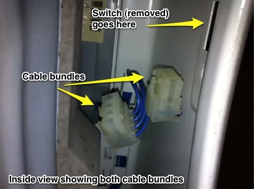
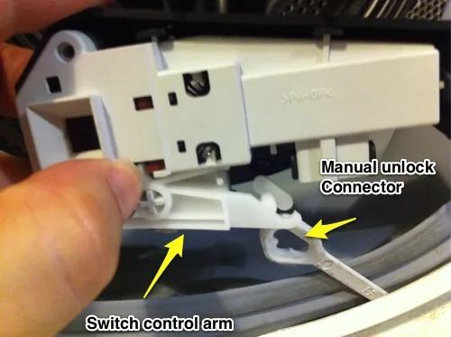
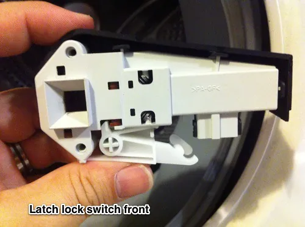
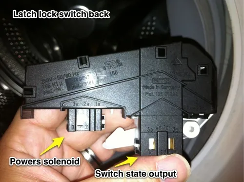

Bosch Axxis washer "Door Open?" error and repair
Background:
My wife and I own a Bosch Axxis front-loading washer and dryer set (WFR 2450/2460 and WTA 4410US). One morning my wife informed me that the washer was not working. It was reporting that the door was open and wouldn't allow a wash cycle to begin. No matter how carefully we opened and closed the door, the washer beeped and displayed "Door Open?" on its LCD screen.
We had a house guest at the time who had been using the washer and dryer almost non-stop for 4 days, and who claimed to not know that the washer was no longer working. (The story of the house guest who broke everything she touched and overstayed her welcome is a topic for a different blog)
Several Google searches later and we were no closer to a solution. Some people reported needing to replace the door switch, others that a new door switch did not fix the problem. Many people also complained about not being able to open the door once the cycle was complete.
The solution in our case was probably the best possible outcome requiring neither a new switch nor removal of the washer.
Repair Summary:
The repair was very simple. The door latches into an electric lock, which keeps the door locked during a cycle.
Inside the washer, the door latch has two control cable bundles connected to it. One provides power to a solenoid (a magnetic plunger) which locks and unlocks the latch, while the second cable bundle is used by the washer to determine the state of the latch ("Is it locked?" "Is the door closed?").
Once I got to the latch I realized what had happened:
Due to someone (*cough* houseguest) repeatedly slamming the washer door shut, the second cable bundle had worked itself loose and was no longer connected to the electric lock switch. This caused the washer to no longer know if the door was closed or not.
Re-connecting all the cables to the electric lock fixed the problem.
Repair Step-by-Step:
Tools:
- A pair of pliers.
- A flathead screwdriver.
- A 2.5mm (metric) hex screwdriver. (optional)
Steps:
- Remove the wire which holds the front of the rubber skirt in place.
- There is a thin metal ring connected to itself by a spring which holds the front of the rubber skirt in place.
- The spring is located on the left side of the door, right next to the hinge.

- Using pliers, grip the wire below the spring and pull down carefully, but with force. You'll need to stretch the spring enough so that you can pull the wire away from under the skirt (it's nestled in groove around the rubber skirt).
- The flathead screwdriver might come in handy here, if you work it under the wire and pull it away from the rubber skirt.

- Pull the rubber skirt away on the right side of the door, next to the latch lock switch and push it into the washer and away from the switch.

- Reattach both control cables to the bottom of the switch, making sure they are secure.

- Replace the rubber skirt to its original position.
- There is a groove around the lip of the washer opening into which the skirt fits. When it's correctly seated, the rubber skirt will feel secure and won't have any play.
- Replace the retaining wire.
- Similar to the rubber skirt, the retaining wire fits into a groove around the skirt itself.
- I found it easiest to work the wire into the groove by first placing the spring back in its proper location, right by the door hinge and working the wire into place clockwise, using the pliers and screwdriver when needed.
Optional:
If you discover that you need to replace the switch or, like me, you were just curious and wanted to remove the lock switch and see how it works, do the following:
- Use the 2.5mm hex driver to remove the two screws which hold the switch in place.
- Carefully pull the switch out from behind the steel front of the washer.
- Carefully disconnect the two control cable bundles from the switch itself. The cables aren't very long and there isn't much room back there, so this part is a little tricky.
- Rotate the switch's bottom arm out of the flat plastic connector to which it's attached. That plastic connector goes to the bottom of the washer, behind a service hatch and can be used to manually unlock the door if the switch failed in the locked position.



Switch information:
The switch is manufactured by EMZ Hanauer in Germany, though I can't figure out what the model number is. I've tried doing searches with all the numbers and inscriptions on the switch, but didn't find the actual part number. RepairClinic.com sells the switch, though they have their own internal part and manufacturing numbers, so comparison shopping would be difficult. If anyone knows the actual EMZ part number, please post it in the comments.
14 comments
Comments are closed. These were left on the previous version of this site. Questions? Get in touch.
Your detailed instructions were amazing. You were right on the money!! I followed your instructions and fixed my washer. Sure enough, the cable and switch were loose. It was probably due to all the washing after Sandy. Great photos. Now I need to look how to open the dryer panel so I can clean the filter (I can see it is dirty). Thank you so much for a great post. Have a great day.
Frank
I even replaced the latch and I still have door open ? any Idea to what to do ?
To test it, I would manually short the two leads in correct cable bundle, simulating what the latch does when the door is closed. You'll want to take a look at the "switch state output" (as I have it labeled above) and see which leads in the cable bundle get connected to tell the washer that the door is shut.
Hi. I followed your instructions and was successful! My latch was totally broken so I had to replace it. But simply popped it off the plastic stabilizing bracket, removed the red manual unlock plastic rod, removed the little blue cord unit and then reattached everything to the new latch. Wiggled it back in place on the washer and my washer started up again, no problem. My washer door is indeed a little wonky so I will have to gently close it each time to avoid the problem reoccurring. Thanks for your help!
Hi Lianne. Thanks so much for your feedback. I'm glad that the post was useful to you. Do you mind if I ask where you bought the replacement part and what is the Bosch part number?
I found that my Bosch dryer would not start, falsely indicating the door was open. I read the above and decided that it was too complicated for me so, assuming that all modern appliances are basically a computer, I unplugged it for an hour, plugged it back in and it worked. If you can't pull out the plug, turn off the breaker. The trick is that you have to wait about an hour at least with the plug out (or breaker off) before plugging it back in. Once you plug it back in you can start it right away.
I'm glad that leaving your drier unplugged for an hour worked for you. In my case, the cables had physically become disconnected and I'm pretty sure that the technique you used wouldn't have worked for me. Still, it's something that anyone coming to this page could try first, before taking apart their washers.
Well thank you, your post helped me figure out what was wrong so I could fix it! I did a temporary fix until I can get a new latch.
But man, was it ever a pain getting that wire back on >.< I had to use a tiny phillips screwdriver and push down SUPER HARD to expand the spring with my left hand, while maneuvering the rest of the wire into place with the flat head in my right hand, I even used my foot to hold the wire in place. Needless to say I fixed it but at the expense of a very throbbing and sore left palm lol.
I have the same problem but my bosch only has 1 cable bundle. It's not an axxis. It's a 300 series
Amazing! Thank you
Margot Trevelyan's SIMPLE solution WORKED for me: Turn it off at the mains and then turn it on again. It fixed my Hotpoint door open error warning. Thank you very much!